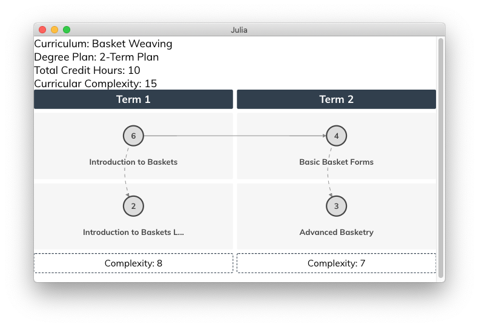

CurricularAnalytics.jl Data Types
This section describes the basic data types associated with the CurricularAnalytics.jl toolbox. These are used to construct courses (with associated learning outcomes), curricula and degree plans.
Courses
CurricularAnalytics.Course — Type.The Course data type is used to represent a single course consisting of a given number of credit hours. To instantiate a Course use:
Course(name, credit_hours; <keyword arguments>)Arguments
Required:
name::AbstractString: the name of the course.credit_hours::int: the number of credit hours associated with the course.
Keyword:
prefix::AbstractString: the prefix associated with the course.num::AbstractString: the number associated with the course.institution:AbstractString: the name of the institution offering the course.canonical_name::AbstractString: the common name used for the course.
Examples:
julia> Course("Calculus with Applications", 4, prefix="MA", num="112", canonical_name="Calculus I")Once a course has been created, requisites may be added to it, or deleted from it, using the following functions.
CurricularAnalytics.add_requisite! — Function.add_requisite!(rc, tc, requisite_type)Add course rc as a requisite, of type requisite_type, for target course tc.
Requisite types
One of the following requisite types must be specified for rc:
pre: a prerequisite course that must be passed beforetccan be attempted.co: a co-requisite course that may be taken before or at the same time astc.strict_co: a strict co-requisite course that must be taken at the same time astc.
add_requisite!([rc1, rc2, ...], tc, [requisite_type1, requisite_type2, ...])Add a collection of requisites to target course tc.
Requisite types
The following requisite types may be specified for rc:
pre: a prerequisite course that must be passed beforetccan be attempted.co: a co-requisite course that may be taken before or at the same time astc.strict_co: a strict co-requisite course that must be taken at the same time astc.
CurricularAnalytics.delete_requisite! — Function.delete_requisite!(rc, tc)Remove course rc as a requisite for target course tc. If rc is not an existing requisite for tc, an error is thrown.
Requisite types
The following requisite types may be specified for rc:
pre: a prerequisite course that must be passed beforetccan be attempted.co: a co-requisite course that may be taken before or at the same time astc.strict_co: a strict co-requisite course that must be taken at the same time astc.
Just like courses, learning outcomes can have requisite relationships between them.
Learning Outcomes
The LearningOutcome data type is used to associate a set of learning outcomes with a course or a curriculum. To instantiate a LearningOutcome use:
LearningOutcome(name, description, hours)Arguments
name::AbstractString: the name of the learning outcome.description::AbstractString: detailed description of the learning outcome.hours::int: number of class (contact) hours needed to attain the learning outcome.
Examples:
julia> LearningOutcome("M1", "Learner will demonstrate the ability to ...", 12)Curricula
To create a curriculum from a collection of courses, and their associated requisites, use:
CurricularAnalytics.Curriculum — Type.The Curriculum data type is used to represent the collection of courses that must be be completed in order to earn a particualr degree. Thus, we use the terms curriculum and degree program synonymously. To instantiate a Curriculum use:
Curriculum(name, courses; <keyword arguments>)Arguments
Required:
name::AbstractString: the name of the curriculum.courses::Array{Course}: the collection of required courses that comprise the curriculum.
Keyword:
degree_type::Degree: the type of degree, allowable types:AA,AS,AAS,BA,BS(default).institution:AbstractString: the name of the institution offering the curriculum.system_type::System: the type of system the institution uses, allowable types:semester(default),quarter.CIP::AbstractString: the Classification of Instructional Programs (CIP) code for the curriculum. See:https://nces.ed.gov/ipeds/cipcode
Examples:
julia> Curriculum("Biology", courses, institution="South Harmon Tech", degree_type=AS, CIP="26.0101")The following function can be used to ensure that a constructed curriculum is valid.
CurricularAnalytics.isvalid_curriculum — Function.isvalid_curriculum(c::Curriculum, errors::IOBuffer)Tests whether or not the curriculum graph $G_c$ associated with curriculum c is valid, i.e., whether or not it contains a requisite cycle. Returns a boolean value, with true indicating the curriculum is valid, and false indicating it is not.
If $G_c$ is not valid, the requisite cycle(s) are written to the errors buffer. To view these cycles, use:
julia> errors = IOBuffer()
julia> isvalid_curriculum(c, errors)
julia> println(String(take!(errors)))A curriculum graph is not valid if it contains a directed cycle; in this case it is not possible to complete the curriculum.
Terms
CurricularAnalytics.Term — Type.The Term data type is used to represent a single term within a DegreePlan. To instantiate a Term use:
Term([c1, c2, ...])where c1, c2, ... are Course data objects
Degree Plans
To create a degree plan that satisfies the courses associated with a particular curriculum use:
CurricularAnalytics.DegreePlan — Type.The DegreePlan data type is used to represent the collection of courses that must be be completed in order to earn a particualr degree. To instantiate a Curriculum use:
DegreePlan(name, curriculum, terms, additional_courses)Arguments
name::AbstractString: the name of the degree plan.curriculum::Curriculum: the curriculum the degree plan must satisfy.terms::Array{Term}: the arrangement of terms associated with the degree plan.additional_courses::Array{Course}: additional courses in the degree plan that are not a part of the curriculum. E.g., a prerequisite math class to the first required math class in the curriculum.
Examples:
julia> DegreePlan("Biology 4-year Degree Plan", curriculum, terms)The following function can be used to ensure that a constructed degree plan is valid.
CurricularAnalytics.isvalid_degree_plan — Function.isvalid_degree_plan(plan::DegreePlan, errors::IOBuffer)Tests whether or not the degree plan plan is valid. Returns a boolean value, with true indicating the degree plan is valid, and false indicating it is not.
If plan is not valid, the reason(s) why are written to the errors buffer. To view these reasons, use:
julia> errors = IOBuffer()
julia> isvalid_degree_plan(plan, errors)
julia> println(String(take!(errors)))There are two reasons why a curriculum graph might not be valid:
- Requisites not satsified : A prerequisite for a course occurs in a later term than the course itself.
- Incomplete plan : There are course in the curriculum not included in the degree plan.
- Redundant plan : The same course appears in the degree plan multiple times.
To find the term where a given course is located within a degree plan use:
CurricularAnalytics.find_term — Function.find_term(plan::DegreePlan, course::Course)In degree plan plan, find the term in which course course appears. If course in not in the degree plan an error message is provided.
To see the terms and courses associated with a degree plan use:
CurricularAnalytics.print_plan — Function.print_plan(plan::DegreePlan)Ugly print out of a degree plan to the Julia console.
The ability to create degree plans that satsify very "goodness" criteria is described in more detail in Creating Degree Plans.
A sophisticated visualization capability for viewing degree plans is described in Visualizing Curricula and Degree Plans. An example of how to use capability is shown below.
Examples:
The following commands will produce the visualization shown below:
julia> A = Course("Introduction to Baskets", 3)
julia> B = Course("Introduction to Baskets Lab", 1)
julia> C = Course("Basic Basket Forms", 3)
julia> D = Course("Advanced Basketry", 3)
julia> add_requisite!(A, B, strict_co)
julia> add_requisite!(A, C, pre)
julia> add_requisite!(C, D, co)
julia> curric = Curriculum("Basket Weaving", [A,B,C,D])
julia> terms = Array{Term}(undef, 2)
julia> terms[1] = Term([A,B])
julia> terms[2] = Term([C,D])
julia> dp = DegreePlan("2-Term Plan", curric, terms)
julia> visualize(dp)